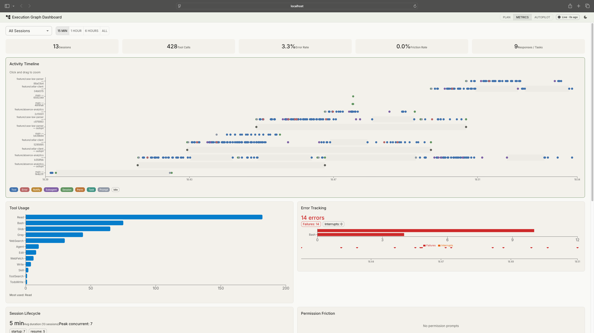

Watchfloor
AI agents run the delivery pipeline. The watch floor is where I supervise them.
An agentic software delivery system. AI agents take a feature from requirements to committed code through an eight-phase pipeline with deterministic quality gates. Orchestrators run single tasks or whole dependency-ordered plans unattended. And a supervision deck streams what the agents are doing, measures what it costs, and holds the controls to pause anything that drifts.
- The problem: AI coding assistants produce fast output that is unverifiable by default, and solo delivery still needs the roles a team would provide.
- The decision: constrain generative work with deterministic gates and adversarial review, and let autonomy be earned through evidence.
- What I built: an eight-phase delivery pipeline, three orchestrators for unattended work, and a supervision dashboard with live streams and controls.
- What I measured: 56% lower cost from per-phase model routing in a controlled three-configuration canary on the same feature, with every quality gate preserved.
- Why it matters: these are the governance questions any organisation meets when agents write code, answered in miniature with a full audit trail.
The name comes from operations centers. A watch floor is the room where people monitor live systems and step in when a decision is needed. Here the live systems are AI agents building software.
How it started
In autumn 2025 I started building with GitHub Copilot. Prompt, fix, prompt, fix. I tried Cursor, then settled on Claude Code. The pipeline grew from there: each frustration became a feature. Repetitive prompts became reusable commands. Drifting settings became a central config repo. Inconsistent QA became deterministic gates. Manual approvals on work that didn't need me became autopilot. Once work ran unattended, I needed to see it, so in February 2026 I built a monitoring dashboard. None of it was planned upfront. Each project fed back into the system, and the system fed back into the next project.
For a while the pipeline and the dashboard lived as two separate projects in two repos. That boundary made sense when one generated work and the other only watched it. It stopped making sense as they grew together: most new features touched both sides, documentation split across two places, and every change meant coordinating two histories. In April 2026 I merged them into one system and later gave it one name. Repo boundaries are process decisions, and this one had quietly become the bottleneck.
What it is now
The system has three layers, plus a cost dimension that runs through all of them. 33 commands and 14 specialist agents do the work. Watchfloor has delivered most of its own subsequent development through its own pipeline, feature by feature, with the phase-labeled git history as the audit trail.
Each layer has its own chapter below. The chapters read in order, but each stands on its own.
The chapters
The pipeline
The AI writes the code. Static analysis, test suites, and adversarial review decide if it's any good. Eight phases, every artifact committed, every decision traceable.

Autopilot & execution graphs
Unattended delivery for work where the gates are sufficient. Dependency-ordered plans coordinate whole projects, with drift detection watching every task.

The watch floor
The supervision deck. Live session streams, plan tracking, session metrics, and the controls that grew out of watching: pause, resume, and a terminal into any running agent.

Economics & model routing
Autonomous pipelines have a cost curve. Measured A/B canaries, per-phase model routing, and a local-model harness. Cost decisions with the same rigour as quality decisions.

Reflections
Watchfloor is a solo setup, but the questions it answers are organisational. How do I structure AI work so the output is verifiable? How do I build trust in autonomous processes incrementally, from evidence instead of hope? Where does human judgement add value, and where does it just add latency? What does the supervision layer need to show before I'm comfortable not watching? Every organisation adopting AI agents in development will meet these questions. I've been answering them in miniature, one feature at a time, with the audit trail to show for it.
What went wrong
The two-repo split lasted months longer than it should have. I kept paying the coordination tax because the structure was familiar and the merge felt like a detour from feature work. What finally forced the decision was noticing that the friction showed up in the plans themselves: tasks artificially split so each repo could own its half. When the process structure starts warping the work to fit it, the structure is wrong. Merging took two days. The tax had cost far more.
View on GitHub
tomashermansen-lang/watchfloor